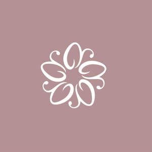
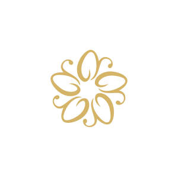

Trade Mark Journal No.2026/008 20 February 2026
UK00004333457 1 February 2026 (3,5,8,11,14,44)
Mark 1

Mark 2

- Class 3
- Artificial nails; False nails; Nails (False -); Glue for strengthening nails; Nail polish; Adhesives for false eyelashes, hair and nails; Nail glitter; Nail strengtheners; Adhesives for artificial nails; Lotions for strengthening the nails; Nail polish pens; Nail varnish; Varnish (Nail -); Nail enamel; Nail varnishes; Adhesives for fixing false nails; Nail paint [cosmetics]; Nail enamels; Nail polish removers; Nail makeup; Preparations for reinforcing the nails; Adhesives for affixing false nails; Nail polish remover pens; Nail cosmetics; Nail polish remover; Preparations for removing gel nails; Nail enamel removers; Nail polish removers [cosmetics]; Nail gel; Nail enamel remover; Nail tips; Nail hardeners; Nail varnish removers; Nail polish base coat; Nail tips [cosmetics]; Nail whiteners; Nail polish top coat; Nail hardeners [cosmetics]; Nail buffing preparations; Nail varnish remover [cosmetics]; Nail conditioners; Nail primer [cosmetics]; Gel nail removers; Nail polishing powder; Nail base coat [cosmetics]; Nail varnish removing preparations; Hair lacquers; Artificial fingernails; Abrasive boards for use on fingernails; Powder for forming sculpted finger nail tips; Tooth polishes; Decalcomanias for fingernails; Abrasive emery paper for use on fingernails; False fingernails; Nail varnish for cosmetic purposes; Nail cream; Artificial nails for cosmetic purposes; Tooth polish; False toenails; Abrasive paper for use on the fingernails; Adhesives for affixing artificial fingernails; Fingernail decals; Skin, eye and nail care preparations; Nail repair preparations; Cosmetic preparations for nail drying; Cosmetic nail preparations; Nail decolorants; Fingernail tips; Hair lacquer; Nail care preparations; Polish; Nail art stickers; Polishes; Metal polishes; Dressings for nail reconstruction; Artificial fingernails of precious metal; Metal polish; Cosmetic nail care preparations; Leather polishes; Shoe polishes; Body polish; Microdermabrasion polish; Pedicure preparations; Dental polish; Denture polishes; Polishes (Denture -); Spray polish; Car polish; Automobile polishes; Shoe polish and creams; Automobile polish; Nail-polish removers; Shoe polish; Shoe polish applicators containing shoe polish; Furniture polishes; Furniture polish; Hairstyling serums; Hair styling gel; Chrome polish; Window cleaners [polish]; Cuticle cream; Wax treatments for the hair; Cosmetics; Skincare cosmetics; Moisturisers [cosmetics]; Cosmetics and cosmetic preparations; Hair cosmetics; Skin fresheners [cosmetics]; Cosmetics for eye-lashes; Anti-aging moisturizers used as cosmetics; Cosmetics for suntanning; Organic cosmetics; Lip cosmetics; Non-medicated cosmetics; Skin moisturizers used as cosmetics; Natural cosmetics; Cosmetics preparations; Mousses [cosmetics]; Make-up palettes containing cosmetics; Tanning gels [cosmetics]; Cosmetics in the form of lotions; Tanning oils [cosmetics]; Colour cosmetics; Facial creams [cosmetics]; Beauty care cosmetics; Self-tanning preparations [cosmetics]; Suncare lotions [for cosmetic use]; Cosmetics for animals; Eyebrow cosmetics; Tanning preparations [cosmetics]; Decorative cosmetics; Multifunctional cosmetics; Eye cosmetics; Milks [cosmetics]; Body creams [cosmetics]; After-sun oils [cosmetics]; Skin masks [cosmetics]; Cosmetics for eye-brows; Tanning milks [cosmetics]; Functional cosmetics; Facial gels [cosmetics]; Suntan oils [cosmetics]; Skin care cosmetics; Fluid creams [cosmetics]; Non-medicated cosmetics and toiletry preparations; Suntan lotion [cosmetics]; Cosmetics for children; Humectant preparations [cosmetics]; Emollient preparations [cosmetics]; Cosmetics in the form of creams; Powder compacts [cosmetics]; Sun-tanning preparations [cosmetics]; Cosmetic hair lotions; Suntanning oil [cosmetics]; Colour cosmetics for the skin; After-sun milks [cosmetics]; After-sun milk [cosmetics]; Cosmetics for use on the skin; Cosmetic moisturisers; Sunscreens [for cosmetic use]; Cosmetic creams and lotions; Bath powder [cosmetics]; Night creams [cosmetics]; Skin recovery creams [cosmetics]; Sun blocking lipsticks [cosmetics]; Cosmetic products in the form of aerosols for skincare; Body gels [cosmetics]; Body and facial creams [cosmetics]; Cosmetics for the use on the hair; Lip stains [cosmetics]; Sunscreen creams [for cosmetic use]; Body care cosmetics; Sunscreen [for cosmetic use]; Creams (Cosmetic -); Cosmetic creams; Cosmetic soaps; Cosmetics containing keratin; Cosmetic skin fresheners; Cosmetics in the form of powders; Hair care lotions [for cosmetic use]; Cosmetics in the form of oils; Dyes (Cosmetic -); Cosmetic dyes; Cosmetics containing panthenol; After-sun lotions [for cosmetic use]; Beauty lotions; Cosmetic facial lotions; Facial lotions [cosmetic]; Cosmetic suntan lotions; Perfume oils for the manufacture of cosmetic preparations; Skin care lotions [cosmetic]; Colour cosmetics for children; Tissues impregnated with cosmetics; Anti-aging creams [for cosmetic use]; Sun protecting creams [cosmetics]; Cosmetic products for the shower; Anti-ageing creams [for cosmetic use]; Smoothing emulsions [cosmetics]; Perfumed powders [for cosmetic use]; Skin cleansers [cosmetic]; Liners [cosmetics] for the eyes; Skin creams [cosmetic]; Skin creams [for cosmetic use]; Moisturising skin lotions [cosmetic]; Cosmetic creams for the skin; Body and facial gels [cosmetics]; Makeup; Make-up; Facial makeup; Lip makeup; Eye makeup; Theatrical makeup; Natural makeup; Make-up remover; Skin make-up; Make-up primer; Organic makeup; Make-up removers; Make-up primers; Eye makeup remover; Powder for make-up; Make-up powder; Powder (Make-up -); Multifunctional makeup; Make-up pencils; Foundation make-up; Make-up foundation; Make-up for the face; Make-up for compacts; Eye make-up; Make-up foundations; Chalk for make-up; Make-up removing lotions; Eyes make-up; Eye make-up removers; Make-up kits; Make-up base; Make-up preparations; Make-up removing creams; Eyelid doubling makeup; Makeup setting sprays; Make-up removing gels; Make-up for the face and body; Facial concealer; Hair mascara; Make-up preparations for the face and body; Make-up removing preparations; Make-up removing milks; Make-up removing milk; Hairstyling masks; Eyeliner; Special effects wax for make-up; Compacts containing make-up; Mascara; Eye-shadow; Fake blood being theatrical make-up; Eyeshadow; Facial cleansers [cosmetic]; Hair styling lotions; Facial moisturisers [cosmetic]; Facial beauty masks; Lipstick; Hair moisturizers; Cosmetic facial masks; Facial masks [cosmetic]; Cosmetic hair dressing preparations; Eyeshadow palettes; Hair care creams [for cosmetic use]; Facial creams [cosmetic]; Facial creams [for cosmetic use]; Facial wipes impregnated with cosmetics; Beauty preparations for the hair; Anti-aging skincare preparations; Skincare preparations; Anti-aging moisturizers; Anti-ageing moisturiser; Beauty serums; Acne cleansers, cosmetic; Non-medicated skincare preparations; Moisturising skin creams [cosmetic]; Suncare lotions; Beauty serums with anti-ageing properties; Anti-aging creams; Anti-ageing creams; Anti-ageing serums for cosmetic purposes; Skin moisturisers; Skin moisturizer; Skin moisturizers; Skin moisturiser; Skin balms [cosmetic]; Moisturisers; Skin care creams [cosmetic]; Cosmetic creams for skin care; Anti-wrinkle creams [for cosmetic use]; Cosmetic nourishing creams; Skin cleansers; Moisturiser; Cleansing creams [cosmetic]; Moisturizers; Skin moisturizer masks; Anti-ageing serum; Exfoliants for the care of the skin; Facial moisturizers; Non-medicated skin serums; Exfoliants for the cleansing of the skin; Skin care oils [cosmetic]; Anti-aging serum for cosmetic use; Beauty creams; Moisturising body lotion [cosmetic]; Lotions for the skin; Beauty balm creams; Skin lotions; Skin toners [cosmetic]; Skin cleansing lotion; Cosmetic massage creams; Skin whitening creams; Creams (Skin whitening -); Sun care lotions [for cosmetic use]; Exfoliating creams; Skin cleansers [non-medicated]; Hair moisturisers; Skin whitening preparations [cosmetic]; Moisturizing creams; Creams for tanning the skin; Skin cream [for cosmetic use]; Skin lotion; Cosmetics for use in the treatment of wrinkled skin; Aromatherapy creams; Anti-aging cream; Aromatherapy lotions; Skin hydrators; Skin hydrators for cosmetic purposes; After-sun lotions; Cleansing lotions; Hair care serums; Anti-wrinkle creams; Beauty creams for body care; Facial cleansers; Anti-wrinkle cream [for cosmetic use]; Self-tanning preparations [cosmetic]; Moisturising creams; Cosmetic products in the form of aerosols for skin care; Exfoliant creams; Cosmetic preparations for skin firming; Moisturising gels [cosmetic]; Skin creams; Creams for the skin; Moisturizing preparations for the skin; Hydrating creams for cosmetic use; Facial masks; Facial scrubs; Facial lotion; Face masks; Skin masks; Face and body masks; Body mask cream; Hair masks; Facial cream; Body mask lotion; Facial scrubs [cosmetic]; Facial lotions; Facial wash; Facial creams; Facial toner; Cleaning masks for the face; Body masks; Facial cream [for cosmetic use]; Body mask powder; Facial oil; Cosmetic masks; Facial washes; Facial oils; Facial serum for cosmetic use; Facial washes [cosmetic]; Clay skin masks; Facial toners [cosmetic]; Facial soaps; Cleansing masks; Facial packs; Facial packs [cosmetic]; Cosmetic facial packs; Hydrating masks; Hair care masks; Beauty masks; Masks (Beauty -); Gel eye masks; Body and facial oils; Pores tightening mask packs used as cosmetics; Facial cleansing milk; Facial butters; Facial massage oils; Cosmetic mud masks; Facial emulsions; Body and facial butters; Facial preparations; Hand masks for skin care; Foot masks for skin care; Facial peel preparations for cosmetic use; Exfoliating scrubs for the face; Beauty masks for hands; Facial cleansing grains; Mask pack for cosmetic purposes; Face wash [cosmetic]; Facial conditioning preparations; Face scrub; Toothpaste; Swallowable toothpaste; Non-medicated toothpaste; Toothpastes; Mouthwash; Solid toothpaste tablets; Deodorant soap; Soap (Deodorant -); Dentifrice; Dentifrices and mouthwashes; Dentifrice powder; Toothpaste in soft cake form; Shampoo; Liquid dentifrice; Mouthwashes; Teeth whitening strips impregnated with teeth whitening preparations [cosmetics]; Tooth whitening pastes; Roll-on deodorants [toiletries]; Teeth cleaning lotions; Dentifrices in the form of chewing gum; Tooth whitening creams; Antiperspirant soap; Soap (Antiperspirant -); Aftershave gels; Toilet cleaning gels; Antiperspirants [toiletries]; Shampoos; Dental bleaching gel; Shaving soap; Talcum powders for toilet use; Talcum powder [for toilet use]; Dental bleaching gels; Gels (Dental bleaching -); Talc [toiletries]; Tooth gel; Waterless shampoo; Shaving gels; Talcum powder, for toilet use; Chewable dentifrices; Dandruff shampoo; After-shave gel; Teeth whitening pens; Tooth powder [for cosmetic use]; Non-medicated dental rinse; Shaving soaps; Toilet soap; Shaving gel; Aftershave milk; Tooth powders [for cosmetic use]; Toilet soaps; Baby shampoo; Tooth whitening preparations; Anti-perspirant deodorants; Non-medicated mouthwashes; Soap powder; Carpet shampoo; Toilet powders; Shaving lotion; Chewable tooth cleaning preparations; Baby shampoo mousse; Aloe soap; Teeth whitening strips; Liquid bath soap; Tooth powder; Tooth powders; Dishwasher detergents in gel form; Shaving lotions; Teeth whitening preparations; Soap products; Non-medicated toilet soaps; Lipsticks; Eyeshadows; Blushers; Eyeliners; Mascaras; Liquid eyeliners; Lipstick cases; Blusher; Lip gloss palettes; Concealers; Eyeliner pencils; Lip balms; Blush pencils; Lip glosses; Lip pomades; Lip pencils; Polishes for guitars; Non-medicated lip balms; Lip balms [non-medicated]; Moisturising creams, lotions and gels; Long lash mascaras; Liquid perfumes; Solid powder for compacts [cosmetics]; Preservatives for leather [polishes]; Leather preservatives [polishes]; Hair balms; Blush; Colour cosmetics for the eyes; Eye concealers; Liquid floor polishes; Cosmetic pencils for cheeks; Eyebrow mascara; Powder compact refills [cosmetics]; Lip liners; Lip tints; Lip balm; Lip conditioners; Eyebrow colors in the form of pencils and powders; Mattifying gel cream; Face blusher; Perfumes; Skin balms (Non-medicated -); Non-medicated skin balms; Lip coatings [cosmetic]; Aftershave balms; Lip gloss; Eye shadow; Eye shadows; Cosmetics in the form of eye shadow; Eyelid shadow; Eye cream; Eye pencils; Eye creams; Under eye correctors; Eye liner; Eye gel; Eye sticks; Eye brightening correctors; Eye correction serum; Eye lotions; Eye gels; Cosmetic eye pencils; Eye wrinkle lotions; Cosmetic preparations for eye lashes; Cosmetic eye gels; Eye stylers; Eye make up remover; Eyes pencils; Eye compresses for cosmetic purposes; Gel eye patches for cosmetic purposes; Cosmetic creams for firming skin around eyes; Face and body glitter; Eyelash tint; Face glitter; Eyelid pencils; Cosmetic paste for application to the face to counteract glare; Eye care products, non-medicated; Patches containing sun screen and sun block for use on the skin; Eyebrow colors; Creams (Non-medicated -) for the eyes; Face and body creams; Cosmetic white face powder; Fragrance sachets for eye pillows; Sun protectors for lips; Face creams; Eyebrow pencils; Pencils (Eyebrow -); Sun screen; Double eyelid tapes; Lip liner; Wiping cloth impregnated with a cleaning preparation for cleaning eye glasses; Lip protectors [cosmetic]; Fingernail overlay material; Lip cream; Lip rouge; Lip polisher; Lip balm [non-medicated]; Lip coatings (Non-medicated -); Lip neutralizers; Lip stains for cosmetic purposes; Lip protectors (Non-medicated -); Lip care preparations; Non-medicated lip care preparations; Tissues impregnated with leather gloss agents; Hair balm; Blemish balm creams; Eyebrow styling wax; Shaving balm; Non-medicated balm for hair; Eyebrow gel; Shave balm; Shaving balms; Cheek colours; Glitter in spray form for use as a cosmetics; Cheek colors; Beard balm; Face powder [for cosmetic use]; Baby bottom balm; Eyebrow powder; Tints for the hair; Body paint (cosmetic); Solid powder for cosmetic compacts; Creamy face powder; Skin relief serum [cosmetic]; Wrinkle resistant creams [for cosmetic use]; Self-adhesive false eyebrows; Face lifting stickers for cosmetic use; Creamy rouge; Sun bronzers; Face powder; Cheek rouges; Pressed face powder; Face dusting powders; Concealers for lines and wrinkles; Face powders; Creamy foundation; Face powders [for cosmetic use]; Face powder (Non-medicated -); Cosmetic face powders; Fair complexion cream; Face cream (Non-medicated -); Cream foundation; Eyelashes; Concealers for spots and blemishes; Liquid rouge; Creamy rouges; Tints for the beard; Loose face powder; Perfumed powder [for cosmetic use]; Skin cream; Face creams for cosmetic use; Aftershave moisturising cream; Solid powder for compacts; Eyebrows [false]; Fair complexion creams; Foundation; Skin foundation; Foundations; Liquid foundation; Liquid foundation (mizu-oshiroi); Make up foundations; Shower gel; Shower and bath gel; Bath and shower gel; Shower gels; Bath and shower gels; Bath gel; Shower and bath foam; Bath and shower foam; Shave gel; Shower soap; Shower cream; Refill packs for shower gel dispensers; Shower creams; Foams for use in the shower; Shower foams; Gel scrub; Bath gels; Hair gel; Lavender gel; Bath and shower preparations; Shower and bath preparations; Preparations for use in the bath or shower; Preparations for the bath and shower; Shower oils; Bath and shower oils [non-medicated]; Bath and shower gels, not for medical purposes; Foaming bath gels; Cosmetic preparations for bath and shower; Bath gels (Non-medicated -); Shower preparations; Preparations for the shower; Soaps in gel form; Non-medicated shower oils; Bath lotion; Gel sprays being styling aids; Pre-shave gels; Soapy gels; Hair gels; Baby bath mousse; Sun tan gel; Bath foam; Foam bath; Liquid soap used in foot bath; Cleansing gels; Liquid bath soaps; Foam bath preparations; Bath soap; Soaps and gels; Bath powder; Hair lotion; Preparations for setting hair; Hair spray; Incense spray; Foot deodorant spray; Body spray; Scented fabric refresher spray; Room perfumes in spray form; Scented body spray; Window cleaners in spray form; Hair styling spray; Cleaning sprays; Spray cleaners for household use; Body oil spray; Room scenting sprays; Degreasing sprays; Scented room sprays; Scented fabric refresher sprays; Shaving sprays; Spray cleaners for use on textiles; Skin cleaning and freshening sprays; Room perfume sprays; SPF sun block sprays; Sunscreen; Sunblock; Sunscreen lotions; Sunscreen creams; Waterproof sunscreen; Sunscreen cream; Water-resistant sunscreen; Sun-block lotions; Sunscreens; Sunscreen sticks; Sunscreen preparations; Suntan lotions; Sun tan lotion; Cosmetic sunscreen preparations; Cosmetic patches containing sunscreen and sun block for use on the skin; Sun-tanning lotions; Cosmetics for protecting the skin from sunburn; Suntan creams; Suntan creams [self-tanning creams]; Sun-tanning creams and lotions; Cosmetic sun milk lotions; After-sun creams; Sun care lotions; Baby suncreams; Sun-tanning creams; Sun creams; Bathing lotions; Sun creams [for cosmetic use]; Sun blocking oils [cosmetics]; Hair protection lotions; After-shave lotions; Sun tan oil; Cosmetic sun oils; Sun-tanning gels; Aftershave lotions; Cosmetic foams containing sunscreens; Moisturizing body lotions; Sun-tanning oils; Sun tan milk; Day lotion; Tanning creams; Sun block [cosmetics]; Depilatory lotions; Sun barriers [cosmetics]; Self tanning lotions [cosmetic]; Baby lotion; Oils for moisturising the skin after sunbathing; After-sun milk for cosmetic use; Scented body lotions and creams; Non-medicated skin lotions; Hair lotions; Hair protection creams; After sun moisturisers; After-sun milk; Cosmetic suntan preparations; Age retardant lotion; Cream for whitening the skin; Whitening the skin (Cream for -); Body lotion; After-shave creams; Sun blocking preparations [cosmetics]; Hand cream; Anti-wrinkle cream; Shaving cream; Hair cream; Camouflage cream; Body cream; Night cream; Bath cream; Skin cleansing cream; Cold cream; Shoe cream; Day cream; Horse oil cream for skin care; Cleansing cream; Base cream; Wrinkle resistant cream; Retinol cream for cosmetic purposes; Body cream for cosmetic use; Cream soaps; Body cream soap; Hair removing cream; False hair (Adhesives for affixing -); Adhesives for affixing false hair; Adhesives for affixing artificial eyelashes; Adhesive tapes for affixing false hair; Eyelashes (Adhesives for affixing false -); Adhesives for affixing false eyelashes; Adhesives for affixing false eyebrows; Perfume; Perfume oils; Perfumery and fragrances; Fragrances; Oils for perfumes and scents; Fragrance sachets; Cologne; Perfume water; Aromatics for perfumes; Potpourris [fragrances]; Colognes; Scents; Fragrance emitting wicks for room fragrance; Aromatics for fragrances; Perfumery; Perfumes for cardboard; Fragrance refills for non-electric room fragrance dispensers; Cedarwood perfumery; Extracts of perfumes; Perfumes for ceramics; Eau de cologne [cologne water]; Body deodorants [perfumery]; Extracts of flowers [perfumes]; Flowers (Extracts of -) [perfumes]; Extracts of flowers being perfumes; Deodorants for personal use [perfumery]; Body fragrances; Perfumeries; Fragrance preparations; Fragrances for automobiles; Perfumed potpourris; Vanilla perfumery; Household fragrances; Perfumed sachets; Natural oils for perfumes; Room fragrances; Perfumery products; Aftershave; Feminine deodorant sprays; Perfumed soaps; Cologne water; Solid perfumes; Scented water for fragrancing; Peppermint oil [perfumery]; Air fragrance preparations; Perfuming sachets; Perfumed soap; Scented oils; Synthetic perfumery; Scented linen sprays; Aftershave balm; Air fragrance reed diffusers; Scented sachets; Aftershaves; Scented body lotions; Synthetic vanillin [perfumery]; Scented soaps; Perfumed powders; Perfumed creams; Essential oils as perfume for laundry purposes; Eau de Cologne; Eau de cologne; Sachets for perfuming linen; Linen (Sachets for perfuming -); Perfumed powder; Essences for fragrancing; Eau de colognes; Ethereal oils for fragrancing; Fumigation preparations [perfumes]; Perfumed lotions [toilet preparations]; Fragrance for household purposes; After-shave; After-shave balms; Eaux de Cologne; Eaux de cologne; Aftershave creams; Perfumed body lotions [toilet preparations]; Fragrant sachets; Agarwood [incense]; Incense sachets; Natural perfumery; Perfumed water; Eau de parfum; Scented body creams; Refills for electric room fragrance dispensers; Aromatherapy preparations; Potpourri sachets for incorporating in aromatherapy pillows; Massage oils; Massage oils and lotions; Essential oils for fragrancing; Aromatic oils for the bath; Body massage oils; Massage candles for cosmetic purposes; Massage oil; Aromatherapy pillows comprising potpourri in fabric containers; Bath oils; Non-medicated bath oils; Bath oils (Non-medicated -); Massage oils, not medicated; Lavender oil for cosmetic use; Bath herbs; Bath oils for cosmetic purposes; Non-medicated oils; Non-medicated massage preparations; Rosemary oil for cosmetic use; Eucalyptus oil for cosmetic use; Perfumed oils for skin care; Distilled oils for beauty care; Mineral oils [cosmetic]; Scented bathing salts; Scented oils used to produce aromas when heated; Aromatic potpourris; Room fragrancing products; Citronella oil for cosmetic use; Bath lotions (Non-medicated -); Massage waxes.
- Class 5
- Pharmaceutical preparations for animal skincare; Pharmaceutical skin lotions; Moisturising creams [pharmaceutical]; Acne cleansers [pharmaceutical preparations]; Serums; Dermatological pharmaceutical products; Medicinal creams for skin care; Skin care lotions [medicated]; Pharmaceutical products and preparations for hydrating the skin during pregnancy; Antibiotic dermatological products; Acne creams [pharmaceutical preparations]; Moisturising body lotion [pharmaceutical]; Jellyfish repellent sunscreens; Medicated sunscreen preparations; Sunburn ointments; Calamine lotion; Alcohol-based antibacterial skin sanitizer gels; Medicated skin lotions; Mosquito repellants for application to the skin; Medicinal creams for the protection of the skin; Medicated after-shave lotions; Creams (Medicated -) for application after exposure to the sun.
- Class 8
- Manicure and pedicure tools; Nail buffers for use in manicure; Manicure sets; Manicure implements; Manicure sets, electric; Electric manicure sets; Pedicure sets; Cases for manicure instruments; Pedicure implements; Nail clippers; Nail scissors; Electric pedicure sets; Nail skin treatment trimmers; Nail nippers; Nail polishers (Electric -); Cuticle scissors; Nail polishers (Non-electric -); Cuticle tweezers; Hand-operated nail clippers for pets; Fingernail clippers; Hairdressing scissors; Nail buffers; Nail punches; Carpenters' pincers [nail pullers]; Nail pullers, hand-operated; Electric nail buffers; Nail extractors; Extractors (Nail -); Nail extractors, hand-operated; Nail files; Nail files, non-electric; Nail nippers [hand tools]; Roller head refills for electronic nail files; Nail drawers [hand tools]; Nail clippers, electric or non-electric; Nail files, electric; Electric nail files; Roller heads for electronic nail files; Electric fingernail polishers.
- Class 11
- Chandelier pendants.
- Class 14
- Jewellery; Necklaces [jewellery]; Brooches [jewellery]; Jewellery brooches; Jewellery, including imitation jewellery and plastic jewellery; Pendants [jewellery]; Bracelets [jewellery]; Brooches [jewellery, jewelry (Am.)]; Ornaments [jewellery]; Amulets being jewellery; Amulets [jewellery]; Pearls [jewellery]; Trinkets [jewellery]; Necklaces [jewellery, jewelry (Am.)]; Jewelry; Fashion jewellery; Gold jewellery; Lockets [jewellery]; Jade [jewellery]; Brooches [jewelry]; Jewelry brooches; Brooches being jewelry; Charms [jewellery]; Charms for jewellery; Jewellery charms; Clasps for jewellery; Enamelled jewellery; Ornaments [jewellery, jewelry (Am.)]; Pearls [jewellery, jewelry (Am.)]; Costume jewellery; Items of jewellery; Jewellery items; Decorative brooches [jewellery]; Trinkets [jewellery, jewelry (Am.)]; Rings being jewellery; Rings [jewellery]; Amulets [jewellery, jewelry (Am.)]; Bracelets [jewellery, jewelry (Am.)]; Pewter jewellery; Jewellery stones; Cloisonné jewellery [jewelry (Am.)]; Wristlets [jewellery]; Cloisonné jewellery; Charms [jewellery, jewelry (Am.)]; Cloisonne jewellery; Lockets [jewellery, jewelry (Am.)]; Chains [jewellery, jewelry (Am.)]; Rings [jewellery, jewelry (Am.)]; Jewellery products; Ivory [jewellery, jewelry (Am.)]; Shoe jewellery; Precious jewellery; Crucifixes as jewellery; Necklaces [jewelry]; Agate as jewellery; Pins [jewellery, jewelry (Am.)]; Jewellery chains; Chains [jewellery]; Ivory jewellery; Medallions [jewellery, jewelry (Am.)]; Jewellery in semi-precious metals; Jewellery caskets; Jewellery chain; Paste jewellery [costume jewelry (Am.)]; Paste jewellery [costume jewelry [Am.]]; Gold plated brooches [jewellery]; Pins [jewellery]; Pins being jewellery; Jewellery boxes; Amber pendants being jewellery; Jewellery for personal adornment; Imitation jewellery; Pendants [jewelry]; Cabochons for making jewellery; Jewellery chain of precious metal for necklaces; Amberoid pendants being jewellery; Gold thread [jewellery, jewelry (Am.)]; Beads for making jewellery; Body jewellery; Jewellery for pets; Personal jewellery; Fake jewellery; Jewellery incorporating diamonds; Jewelry (Paste -) [costume jewelry]; Paste jewelry [costume jewelry]; Jewellery in non-precious metals; Silver thread [jewellery, jewelry (Am.)]; Imitation jewellery ornaments; Plastic costume jewellery; Hat jewellery; Facial jewellery; Clips of silver [jewellery]; Jewellery findings; Crosses [jewellery]; Jewellery in the form of beads; Sterling silver jewellery; Paste jewellery; Jewellery (Paste -); Bracelets [jewelry]; Jewellery incorporating pearls; Amulets [jewelry]; Pearls [jewelry]; Jewellery articles; Articles of jewellery; Jewellery made from gold; Jewellery made from silver; Jewellery chain of precious metal for anklets; Diamond jewelry; Wire of precious metal [jewellery, jewelry (Am.)]; Jewellery containing gold; Dress ornaments in the nature of jewellery; Lockets [jewelry]; Jewellery chain of precious metal for bracelets; Jewellery in precious metals; Jewellery of precious metals; Clasps for jewelry; Jewelry stickpins; Trinkets [jewelry]; Artificial jewellery; Threads of precious metal [jewellery, jewelry (Am.)]; Jewellery for personal wear; Decorative pins [jewellery]; Jewellery cases; Jewellery fashioned from non-precious metals; Charms [jewelry]; Jewelry charms; Charms for jewelry; Body costume jewellery; Jewellery rope chain for necklaces; Jewellery fashioned of semi-precious stones; Signet rings; Rings [jewelry]; Silver-plated rings; Finger rings; Gold-plated rings; Engagement rings; Wedding rings; Silver rings; Gold rings; Eternity rings; Rings [trinket]; Platinum rings; Body-piercing rings; Friendship rings; Key rings; Key rings [split rings with trinket or decorative fob]; Gold plated rings; Charms for key rings; Ring bands [jewellery]; Rings of precious metal; Non-metal key rings; Key rings of leather; Leather key rings; Decorative key rings; Split rings of precious metal for keys; Retractable key rings; Key rings, not of metal; Key rings [trinkets or fobs]; Rings [jewellery] made of precious metal; LED finger ring watches; Key rings of precious metal; Retractable key rings [trinkets or fobs]; Rings [jewellery] made of non-precious metal; Rings coated with precious metals; Earrings; Jewelry clips for adapting pierced earrings to clip-on earrings; Silver-plated earrings; Hoop earrings; Pierced earrings; Gold-plated earrings; Silver earrings; Gold earrings; Clip earrings; Drop earrings; Choker necklaces; Necklaces; Gold plated earrings; Necklace charms; Silver-plated necklaces; Gold-plated necklaces; Pendants; Silver necklaces; Gold necklaces; Earrings of precious metal; Bangle bracelets; Scarf clips being jewelry; Bangles; Silver-plated bracelets; Jewelry hatpins; Bib necklaces; Cabochons for making jewelry; Jewel pendants; Identification bracelets [jewelry]; Bead bracelets; Bracelet charms; Pins being jewelry; Pins [jewelry]; Bracelets; Rhinestones for making jewelry; Closures for necklaces; Hat jewelry; Beads for making jewelry; Jewellery rope chain for bracelets; Crucifixes as jewelry; Jewelry hat pins; Silver bracelets; Cloisonné jewelry; Jewellery rope chain for anklets; Pendant watches; Cabochons; Costume jewelry; Gold bracelets; Jewellery hat pins; Jewelry chains; Chains [jewelry]; Cameos [jewelry]; Bracelets made of embroidered textile [jewelry]; Gold plated bracelets; Ivory jewelry; Cufflinks; Identification bracelets of precious metal [jewelry]; Shoe jewelry; Wooden bead bracelets; Necklaces of precious metal; Bracelets made of embroidered textile [jewellery]; Pendants for watch chains; Plastic bracelets in the nature of jewelry; Silver thread [jewelry]; Bracelets for watches; Ankle bracelets; Friendship bracelets; Watch bracelets; Charity bracelets; Bracelets [charity]; Bracelets and watches combined; Bracelets of precious metal; Flexible wire bands for wear as a bracelet; Metal expanding watch bracelets; Bracelets made of rubber or silicone with pattern or message; Straps for wristwatches; Jewelry pins for use on hats; Key chains as jewellery [trinkets or fobs]; Wrist straps for watches; Straps for wrist watches; Key charms [trinkets or fobs]; Lapel pins [jewellery]; Lapel pins [jewelry]; Lapel pins of precious metals [jewellery]; Silver thread [jewellery]; Gold thread [jewellery]; Cloisonne pins; Jewellery made of bronze; Ornamental lapel pins; Jewellery fashioned from bronze; Cuff-links; Gold thread jewelry; Gold thread [jewelry]; Gold; Gold bullion; Gold coins; Gold ingots; Gold medals; Gold bullion coins; Silver; Silver bullion; Gold alloys; Gold chains; Gold plated chains; Imitation gold; Silver ingots; Gold alloy ingots; Gold base alloys; Gold and its alloys; Gold, unwrought or beaten; Watches made of plated gold; Spun silver [silver wire]; Unwrought silver; Silver alloy ingots; Square gold chain; Platinum ingots; Watches made of gold; Figurines made from gold; Silver alloys; Objet d'art of enamelled gold; Silver thread; Silver watches; Platinum jewelry; Platinum alloy ingots; Platinum [metal]; Platinum; Unwrought silver alloys; Medals coated with precious metals; Gold, unworked or semi-worked; Figurines made of imitation gold; Silver, unwrought or beaten; Jewellery plated with precious metals; Silver and its alloys; Horological instruments made of gold; Ingots of precious metal; Ingots of precious metals; Medals made of precious metals; Jewellery made of plated precious metals; Cuff links made of gold; Jewellery coated with precious metals; Watches made of rolled gold; Figurines made from silver; Trinkets of bronze; Copper tokens; Tokens (Copper -); Trophies coated with precious metals; Objet d'art of enamelled silver; Cuff links made of imitation gold; Platinum watches; Jewellery of yellow amber; Platinum alloys; Silver objets d'art; Jewellery made of crystal coated with precious metals; Jewelry of yellow amber; Jewellery coated with precious metal alloys; Chain mesh of precious metals [jewellery]; Trophies coated with precious metal alloys; Wire of precious metal [jewellery]; Cuff links made of silver plate; Trinkets coated with precious metal; Wire of precious metal [jewelry]; Figurines coated with precious metal; Statuettes of precious metal; Trophies made of precious metal alloys; Diamonds; Diamond [unwrought]; Cut diamonds; Tanzanite being gemstones; Sapphires; Gemstones; Sapphire; Tourmaline gemstones; Emeralds; Synthetic stones [jewellery]; Topaz; Semi-precious gemstones; Spinel [precious stones]; Chalcedony used as gems; Opal; Precious gemstones; Emerald; Pearl; Artificial gem stones; Opals; Artificial gemstones; Natural gem stones; Olivine [gems]; Ruby; Jewellery made of crystal; Synthetic precious stones; Jewel chains; Chain mesh of semi-precious metals; Jewels; Jade; Jewellery made of precious stones; Gemstones, pearls and precious metals, and imitations thereof; Watch crystals; Jewellery made of glass; Olivine [peridot]; Quartz clocks; Pearls; Cultured pearls; Imitation pearls; Man-made pearls; Natural pearls; Jewellery fashioned of cultured pearls; Pearls made of ambroid [pressed amber]; Precious and semi-precious gems; Artificial stones [precious or semi-precious]; Precious jewels; Precious and semi-precious stones; Imitation precious stones; Cuff links of precious metals with semi-precious stones; Semi-precious stones; Imitation leather key rings; Imitation jewelry; Metal wire [precious metal]; Metal badges for wear [precious metal]; Metal works of art [precious metal]; Peridot; Chalcedony; Cuff links made of precious metals with semi-precious stones; Jewellery being articles of precious stones; Articles of jewellery with precious stones; Jewellery incorporating precious stones; Articles of jewellery with ornamental stones; Jewellery made of semi-precious materials; Charms [jewellery] of common metals; Gems; Statuettes made of semi-precious stones; Presentation boxes for gemstones; Precious stones; Threads of precious metal [jewelry]; Agate [unwrought]; Unwrought agate.
- Class 44
- Manicure and pedicure services; Manicure services; Home-visit manicure services; Nail salon services; Pedicure services; Manicuring; Hair dressing salon services; Airbrush tanning salon services; Services of a hair and beauty salon; Spray tanning salon services; Hair salon services; Hairdressing salon services; Salon services (Hairdressing -); Beauty salons for wig cutting; Sun tanning salon services; Tanning (Sun -) salon services; Salons (Hairdressing -); Hairdressing salons; Beauty salon services; Salon services (Beauty -); Tanning salon and solarium services; Pedicurist services; Slimming salon services; Hair salon services for women; Tanning salons; Make-up services; Permanent makeup services; Make-up application services; Cosmetic make-up services; Services of a make-up artist; Hair salon services for military service members; Make-up consultation and application services; Consultation services in the field of make-up; On-line make-up consultation services; Cosmetician services; Beautician services; Facial beauty treatment services; Hair styling services; Skin care salon services; Haircare services; Beauty consultation services; Pet beauty salon services; Beauty treatment services; Beauty care services; Beauty spa services; Hair care services; Services for the care of the hair; Beauty advisory services; Hair restoration services; Personal hair removal services; Aesthetician services; Hair tinting services; Hairdressing services; Beauty therapy services; Beauty consultancy services; Beauticians (Services of -); Hair treatment services; Cosmetic body care services; Hair extension services; Cosmetics consultancy services; Cosmetic facial and body treatment services; Hygienic and beauty care services; Hair salon services for men; Animal beautician services; Cosmetic treatment services for the body, face and hair; Airbrush tanning services; Hair highlighting services; Make-up consultation services provided on-line or in-person; Facial treatment services; Beauty treatment services especially for eyelashes; Provision of hygienic and beauty care services; Dietician service; Hair coloring services; Beauty aesthetic services; Microdermabrasion services; Hair straightening services; Services for the care of the skin; Beauty care services provided by a health spa; Hair colouring services; Manicuring services; Waxing services for the removal of hair from the human body; Spa services; Skin tanning service for humans for cosmetic purposes; Beauty information services; Barber services; Services of a barber; Advisory services relating to beauty care.
Sapphire Laptop LTD